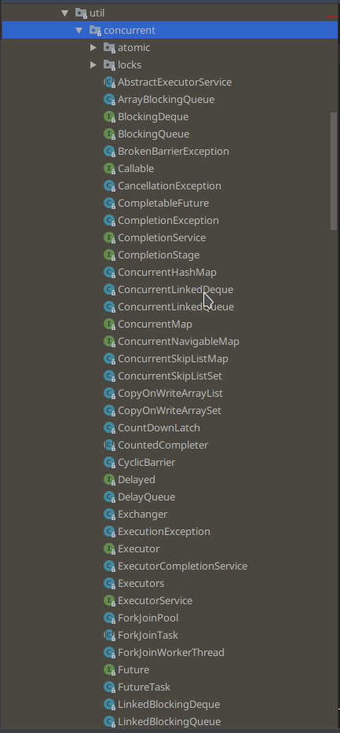

前言
这些锁是并发包下的锁,实现原理全是基于AQS,还使用了CAS操作,先了解一下AQS和CAS,
然后看一下JUC包的结构

ReentrantLock
介绍和使用
可重入的独占锁,即同时只有一个线程可以获取锁,其他尝试获取锁的线程会被放在锁的AQS阻塞队列中,重入的意思是指同一个线程可以多次获取锁.
公平锁和非公平锁. ReentrantLock内部有两个内部类NonfairSync和FairSync分别是非公平锁和公平锁,公平和不公平的区别在于后尝试的线程是否会在先尝试获取锁的线程前获取这个锁.具体的实现,下面说.
AQS的博客中说到过,state这个变量在不同的锁实现中有不同的意义,在ReentrantLock中,state变量代表一个线程获取锁的可重入次数,默认情况下为0,代表没有被线程持有,当第一个线程尝试使用CAS设置state为1,如果CAS成功,就记录锁的持有者为该线程,这个记录的操作是通过AQS中的setExclusiveOwnerThread(Thread)设置.在该线程没有释放锁的情况下第二次获取锁后,状态值被设置为2,即可重入次数.在该线程释放锁时,尝试CAS操作使state减一,如果减一后为0,当前线程释放锁.
- lock,tryLock,lockInterruptibly
- 这个是面试中的问题,三种获取锁的方式有什么不同
- lock是获取锁,如果锁已经被其他线程持有,就将该线程封装置于AQS队列中阻塞挂起.该方法的公平和非公平策略有所不同
- 非公平策略:先来的线程没有获取到锁被置于队列中挂起,后来的线程如果刚好碰到当前持有的锁的线程释放锁,就会直接获取锁,不会查看队列中是否有比自己先来的线程.
- 公平策略就容易理解了,在能拿到锁的时候查看队列中是否有比自己先来的锁,如果有,会让出.
- lockInterruptibly();与lock()类似,不过对中断响应,即如果使用该方法尝试获取时,如果其他线程调用了interrupt()方法中断该线程,该方法会抛出
InterruptionException - tryLock();尝试获取锁,如果锁被持有,就直接返回false,不添加到队列,不挂起阻塞,否则获取锁,返回true;
底层一点
在AQS的时候,我说过,AQS其实是使用了模板模式,继承AQS后需要实现tryAcquire()等方法,所以我们就来看看这个方法
final boolean nonfairTryAcquire(int acquires) {
//当前线程
final Thread current = Thread.currentThread();
//获取同步状态
int c = getState();
//state == 0,表示没有该锁处于空闲状态
if (c == 0) {
//获取锁成功，设置为当前线程所有
if (compareAndSetState(0, acquires)) {
setExclusiveOwnerThread(current);
return true;
}
}
//线程重入
//判断锁持有的线程是否为当前线程
else if (current == getExclusiveOwnerThread()) {
int nextc = c + acquires;
if (nextc < 0) // overflow
throw new Error("Maximum lock count exceeded");
setState(nextc);
return true;
}
return false;
}看代码中的注释就可以知道一个大致的流程,同时我们可以看到ReentrantLock的可重入性以及如何实现.
至于其他的方法我们就很容易理解了,都是围绕state的一个操作,至于其他的AQS已经有提供了.
ReentrantReadWriteLock
介绍和使用
可重入的读写锁,在某些方面和上一个锁还是有些类似的,读写锁内部维护了一个ReadLock和一个WriteLock,底层还是AQS,但是AQS只有一个state状态量,如何同时控制读和写呢,这里使用了state(int)的高16位表示读状态,低16为表示写,高16位的值代表获取读锁的线程数,低16位代表写锁的可重入数.
读写锁维持了很多和读锁有关的变量:
- Thread firstReader:第一个获取读锁的线程
- int firstReaderHoldCount:记录第一个获取读锁的线程的可重入次数.
- int cachedHoldCounter:最后一个获取读锁的线程的可重入次数
- ThreadLocal readHolds:除了第一个获取读锁的线程以外的线程的可重入次数
读写锁也有公平和非公平策略,与ReentrantLock大同小异,不详细介绍了
写锁的获取与释放
- void lock(); 写锁是一个独占锁,和ReentrantLock类似,如果有其他线程已经获得写锁,就进入队列挂起等待,否则获取锁或者使状态值加一.
- 还有tryLock()和lockInterruptibly()以及一些带等待时限的方法,不介绍了,大同小异
- void unlock();释放锁,状态值减一,为0后释放锁,如果没有持有锁而调用了释放锁,抛出
IllegalMonitorStateException异常.
读锁的获取和释放
- void lock();如果当前没有其他线程持有写锁,可以获得读锁,高16为加一,方法返回,否则进入队列阻塞等待.
- 需要注意的是,如果当前要获取读锁的线程已经持有了写锁,则也可以获取读锁,但要注意的是,先获取了写锁,然后获取读锁处理事情完毕后,读写锁都释放,不能只释放其一.
- 获取读锁的实现不复杂,但是很麻烦,因为读写锁内部维持了很多读锁的变量,需要在获取读锁成功后修改.
- void lock();如果当前没有其他线程持有写锁,可以获得读锁,高16为加一,方法返回,否则进入队列阻塞等待.
底层一点
主要看这一段代码:
首先是读锁的lock()函数,底层调用的是tryAcquireShared(),是一个共享的获取锁的过程:
protected final int tryAcquireShared(int unused) {
/*
* Walkthrough:
* 1. 如果写锁被其他线程持有, fail.
*/
//当前线程
Thread current = Thread.currentThread();
//状态state
int c = getState();
// 如果写锁不为0且当前线程不是持有写锁的线程,退出
if (exclusiveCount(c) != 0 &&
getExclusiveOwnerThread() != current)
return -1;
// 读变量
int r = sharedCount(c);
// 读不阻塞且读锁的获取者小于最大值,cas设置
if (!readerShouldBlock() &&
r < MAX_COUNT &&
compareAndSetState(c, c + SHARED_UNIT)) {
//如果读锁为0,设置第一个获得读锁的线程为当前
if (r == 0) {
firstReader = current;
firstReaderHoldCount = 1;
//如果当前线程就是第一个获得读锁的线程,计数++
} else if (firstReader == current) {
firstReaderHoldCount++;
} else {
HoldCounter rh = cachedHoldCounter;
if (rh == null || rh.tid != getThreadId(current))
cachedHoldCounter = rh = readHolds.get();
else if (rh.count == 0)
readHolds.set(rh);
rh.count++;
}
// 获得读锁成功,返回1
return 1;
}
return fullTryAcquireShared(current);
}然后是写锁的lock方法,调用的是tryAcquire(),是一个排他锁:
protected final boolean tryAcquire(int acquires) {
/*
* Walkthrough:
1. 如果读计数非零且写计数也非零,但当前线程不是持有锁的线程,报错
2. 如果计数饱和,报错
3. 如果这个线程是可重入获取或队列策略允许，那么它就有资格获得锁。如果是，则更新状态并设置所有者。
*/
//当前线程
Thread current = Thread.currentThread();
// 状态值
int c = getState();
// 读锁值
int w = exclusiveCount(c);
//状态不为0
if (c != 0) {
// (Note: if c != 0 and w == 0 then shared count != 0)
// 没有拿到读锁的线程,当时有写锁,且当前线程不是持有读锁的线程,返回false
if (w == 0 || current != getExclusiveOwnerThread())
return false;
// 拿到读锁后是否大于最大限制,如果大于,抛出错误
if (w + exclusiveCount(acquires) > MAX_COUNT)
throw new Error("Maximum lock count exceeded");
// Reentrant acquire
// set状态值
setState(c + acquires);
return true;
}
// state = 0
// 如果写阻塞且cas获取失败,返回false
if (writerShouldBlock() ||
!compareAndSetState(c, c + acquires))
return false;
// cas成功,设置当前线程为拿到读锁的线程,返回true
setExclusiveOwnerThread(current);
return true;
}CountDownLatch
故事
这个工具类其实我是用过的,之前做过一个后端的项目,用到了SpringBoot中结合线程池,但是有一个问题,SpringBoot并不会主动关闭线程池,而我的项目不是一个web,需要一直运行,是一个每天定时运行的项目,所以我需要手动关闭线程池,但又不能直接在main线程中关闭,所以用到了CountDownLatch.
简介
CountDownlatch,字面意思是减少计数的门闩,就是不断减少计数,直到为0后门打开,然后执行门后的内容.
用法
构造方法CountDownlatch(int count)count表示需要减少的计数.await()一般是主线程调用,意味着该线程阻塞在这里,直到计数为0,然后执行后面的内容countDown()一般是工作线程调用,完成任务后调用,意味着减少一个计数
用法很简单,没什么难度
底层一点
其实这个源码没什么意思,就是简单用了AQS.
首先我们可以确定的就是,使用的是AQS的共享锁.
然后是await()方法,就是去判断当前值是否为0,不为0就会调用一个自旋方法去一直获得同步状态.
接着是countDown(),首先获取到锁的状态,如果当前状态为0,直接返回减少失败,否则使用CAS更改状态使c–;
就这样,没有什么别的,源码很少很简单,可以自己打开看一下.
CyclicBarrier
简介
CyclicBarrier,字面意思是可循环使用的屏障,它要做的事情就是,让一组线程到达一个屏障时被阻塞,知道最后一个线程到达屏障时,会执行指定方法.
使用
构造方法 : CyclicBarrier(int parties),参数表示构造屏障拦截的数目.
CyclicBarrier(int parties, Runnable barrierAction) barrierAction可以缺省,表示当所有线程到达后执行的内容.await(),每个工作线程调用的,意味着我已经到了,就等你们了,等所有(parties)线程都使用await()等待后,门打开,执行后续.
区别
一般会把CountDownlatch和CyclicBarrier比较,其实我觉得差不多,就是后者可以复用,然后底层后者使用ReentrantLock和Condition,而前者是基于AQS．
底层一点
比较重要的就是一个dowait()方法和分代的一个思想,代码我贴一下:
private int dowait(boolean timed, long nanos)
throws InterruptedException, BrokenBarrierException,
TimeoutException {
//获取锁
final ReentrantLock lock = this.lock;
lock.lock();
try {
//分代
final Generation g = generation;
//当前generation“已损坏”，抛出BrokenBarrierException异常
//抛出该异常一般都是某个线程在等待某个处于“断开”状态的CyclicBarrie
if (g.broken)
//当某个线程试图等待处于断开状态的 barrier 时，或者 barrier 进入断开状态而线程处于等待状态时，抛出该异常
throw new BrokenBarrierException();
//如果线程中断，终止CyclicBarrier
if (Thread.interrupted()) {
breakBarrier();
throw new InterruptedException();
}
//进来一个线程 count - 1
int index = --count;
//count == 0 表示所有线程均已到位，触发Runnable任务
if (index == 0) { // tripped
boolean ranAction = false;
try {
final Runnable command = barrierCommand;
//触发任务
if (command != null)
command.run();
ranAction = true;
//唤醒所有等待线程，并更新generation
nextGeneration();
return 0;
} finally {
if (!ranAction) // 未执行，说明 barrierCommand 执行报错，或者线程打断等等情况。
breakBarrier();
}
}
for (;;) {
try {
//如果不是超时等待，则调用Condition.await()方法等待
if (!timed)
trip.await();
else if (nanos > 0L)
//超时等待，调用Condition.awaitNanos()方法等待
nanos = trip.awaitNanos(nanos);
} catch (InterruptedException ie) {
if (g == generation && ! g.broken) {
breakBarrier();
throw ie;
} else {
// We're about to finish waiting even if we had not
// been interrupted, so this interrupt is deemed to
// "belong" to subsequent execution.
Thread.currentThread().interrupt();
}
}
if (g.broken)
throw new BrokenBarrierException();
//generation已经更新，返回index
if (g != generation)
return index;
//“超时等待”，并且时间已到,终止CyclicBarrier，并抛出异常
if (timed && nanos <= 0L) {
breakBarrier();
throw new TimeoutException();
}
}
} finally {
//释放锁
lock.unlock();
}
}具体的内容看注释,我总的说一下:
首先是拿到锁,这个锁是全局的排它锁,意味着同时只有一个线程可以在一个时刻进入,然后是一些中断和异常的判断,到index处,将当前计数–,然后判断是否这是最后一个到达的线程,如果不是,就使用Condition的await()阻塞当前线程到条件变量的阻塞队列,如果是最后一个线程,就执行我们创建CycliBarrier时的传入的runnable,当然,前提是我们传入了.然后唤醒所有等待在条件变量等待队列中的线程,更新换代.
然后我们说一下换代的问题.Generation是一个内部类,也就是parties个线程到达前,他们属于同一代,因为CyclicBarrier是复用的,所以还有下一代,其实很简单,就是唤醒所有线程,重置count,重置Generation.
原子类
原子操作的问题还是要回到i++上来,我们知道i++并不是一个原子操作,当一个线程读取值,然后使i+1,然后再写回缓存或者内存,这是三步操作,中间可能有其他线程的参与,就会导致线程安全问题,为了解决在这个问题,方法很多,可以加锁(synchronized和lock),还有就是下面说的原子类.
JUC下提供了一系列的原子类,就是atomic包下面的类,这是一种乐观锁的实现,主要就是通过volatile关键字和CAS操作来实现,这两个具体我就不说了,我以前的博客也有相关内容.这里主要说一下原子类.主要有一下几种:
- 原子类:
AtomicBoolean,AtomicInteger,AtomicLong,AtomicReference - 院子数组 :
AtomicIntegerArray,AtomicLongArray,AtomicReferenceArray, - 原子属性更新:
AtomicLongFieldUpdater,AtomicIntegerFieldUpdater,AtomicReferenceFieldUpdater
非阻塞队列
非阻塞队列即不使用锁的队列,主要使用CAS操作保证原子性
ConcurrentLinkedQueue
ConcurrentLinkedQueue是无界非阻塞队列.底层数据结构是单向链表,通过volatile分别修饰两个节点,这两个节点分别存放链表的头结点和尾节点来实现可见性,通过CAS操作保证节点入队出队时操作链表的原子性.
offer():在队列尾部添加一个元素
- 多线程情况下,如何实现多线程同时插入元素.前面说了,通过CAS实现入队时操作的原子性,看一下源码这一行
if (p.casNext(null, newNode)),如果多线程同时执行到这一步,因为CAS操作casNext本身是原子的,如果有一个线程完成了操作,那么其他竞争的线程会重新进入这一行代码的上层循环尝试进行CAS操作,只有成功才会返回. - 这个过程是无锁的,因为没有线程因为没有完成操作而被挂起阻塞,而是在无限循环中不断尝试,就是利用CPU资源换取阻塞引起的开销.孰是孰非,要具体分析.
- 多线程情况下,如何实现多线程同时插入元素.前面说了,通过CAS实现入队时操作的原子性,看一下源码这一行
poll() : 从队头移除一个元素
- 还是一行代码:
if (item != null && p.casItem(item, null)),可以看到,所谓的删除操作就是将当前节点的值设为null,然后重新指定头结点,被移除的节点没了引用,会在gc时被回收,因为整个队列维持了头结点和尾节点两个volatile变量,所以poll和offer并不冲突. - 有一点需要注意,如果没有执行过offer操作就直接poll,会返回null.
- 还是一行代码:
peek():获取头结点元素,不移除
- 这个操作其实和poll类似,不过没有cas操作
size() ; 获取队列长度
- 这个方法有个问题,因为没有加锁,所以如果在调用size()的过程中可能发生增删的操作,造成统计不准确.
阻塞队列
LinkedBlockingQueue
使用ReentrantLock实现锁机制,底层也是单向列表,也有两个节点存放头节点和尾节点,还有一个count代表元素个数.
类中有两个ReentrantLock,分别用于添加和删除操作时的锁控制.LinkedBlockingQueue是一个有界的阻塞队列,可以初始指定容量,默认是0x7fffffff;
offer:队列尾部添加一个元素,队列已满返回false,方法不阻塞.
- offer操作的过程是这样的:先判断元素是否为空,为空抛出空指针异常;然后判断队列是否已满,如果已满返回false;构造新节点,获取putLock独占锁,再一次判断队列是否满,不满则入队列,计数+1,最后释放锁.了解了独占锁,这些其实很简单也很正常,解释一下加粗的内容,为什么要重新判断队列是否满.第一次判断队列是否满时还没有拿到独占锁,如果没有拿到独占锁而被挂起,后来再拿到锁时,可能已经有其他线程进入添加了元素,所以要重新判断.
put() ; 类似offer,不过如果队列已满不会返回false,而是阻塞线程,直到队列空闲再插入
- 具体实现还有一点需要注意,就是队列已满的等待和没有获取到锁的等待是不同的,前者,会将阻塞线程放到条件变量的条件队列中,后者则是放在AQS的阻塞队列中.具体看ReentrantLock源码那篇
poll:从头部移除一个元素,如果队列为空返回null,该方法不阻塞
- 其实实现和offer差不多,不过对应逻辑变一变.注意的是也要判断两次队列是否为空,道理一样.
peek():获取头部元素但不删除,队列为空返回null.
take():类似poll,不过队列为空阻塞线程直到队列不为空.
方法是不是阻塞的,就是当队列满或空时是否阻塞线程.如果被阻塞的线程被其他线程调用了中断方法,会抛出
InterruptedException异常而返回.offer和put操作成功后,会通知被take操作阻塞的线程,类似的,take和poll操作成功后也会通知被put操作阻塞的线程.
ArrayBlockingQueue
底层通过数组实现的有界队列.维持两个下标,一个入队下标,一个出队下标.因为是数组,所以只使用一个独占锁,也就意味着同时只有一个线程进行入队和出队操作.
- offer() ; 向队尾插入一个元素,如果队列有空闲则插入成功并返回true ; 如果队列已满则丢弃当前元素放回false,如果插入元素为null返回空指针异常.
- 如果添加成功,会通知一个被take操作阻塞的线程.put同
- put(); 操作,向队尾插入一个元素,如果队列有空闲则插入成功后直接返回true,如果队列已满则阻塞线程知道队列有空闲并插入成功并返回true;
- poll():从头部移除一个元素,如果队列为空返回null;
- 所谓移除,就是重置对头元素,重设对头下标
- 移除后会激活条件变量通知条件队列中因为队列满而被阻塞的线程.take同
- take();从头部移除一个元素,如果队列空,则阻塞线程.
PriorityBlockingQueue
PriorityBlockingQueue是一个带优先级的无界阻塞队列,每次出兑都返回优先级最高或者最低的元素,内部采用平衡二叉树堆实现,所以直接遍历队列元素不保证有序,因为是带优先级的,所以队列元素必须实现Comparable接口,然后设置对象的compareTo方法,值得一提的是,最大堆还是最小堆是由这个方法决定的;底层采用数组存放元素,
设置一个notEmpty条件变量控制删除时的数组为空的情况,维持一个条件队列,当队列中没有元素时,删除操作的线程会被放入这个队列
一个很重要的标志
allocationSpinLock,只有两个状态0-1,0代表数组没有进行扩容,1代表数组正在进行扩容;offer(E e) : 在队列中添加一个元素,由于是无界队列,所以只会返回true;方法内部,使用ReetrantLock加锁,当成功加入一个元素后,唤醒notEmpty条件队列中的一个阻塞线程,
- 扩容问题
tryGrow:PriorityBlockingQueue为了提高并发性能,使用CAS控制并发操作,而且在执行扩容操作前就释放了offer中添加的独占锁,使得其他线程可以进入,当其他线程拿到锁,进入了offer方法,但是扩容线程还没有完成扩容,就又进入了tryGrow方法,又释放了锁,但是进行CAS失败,不会影响到扩容线程; - 建堆 : 在类中被没有真正的树形的堆,这个最大/最小堆是根据数组存在的,也就是从0-size-1遍历时,对应下标的值就是树形中的层次遍历的顺序,
- 扩容问题
poll() : 获取队列内部堆树的根节点元素,如果队列温控,返回null,这个方法不是阻塞的,但是当一处根节点元素后,整个数组需要调整,建立新的堆;
put(E e) : 因为是无界的, 所以就是offer
take() : 获取队列中根节点的元素,如果队列为空,阻塞线程
size( ) : 安全的,内部加锁;